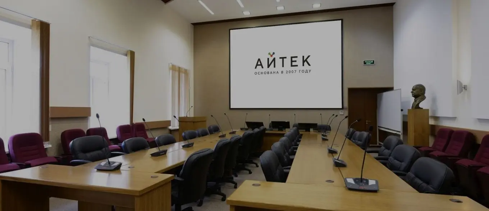

Федеральный исследовательский центр
Апатиты · 60 рабочих дней
Комплексное оснащение конференц-зала в городе Москва

Стоимость и срок указаны для этого объекта. Смета нового проекта зависит от помещения, комплектации и состава работ.
Заказчику необходимо реализовать единую аудиовизуальную и коммутационную систему, совместимую с различными источниками информации для удобного и быстрого доступа к информационным ресурсам, а также для графического отображения. Создание данного комплекса обусловлено необходимостью проведения мультимедийных конференций и аудиопрезентаций, а также других мероприятий, требующих интерактивных решений. В ряду основных требований, выдвигаемых к проекту, были: четкое графическое отображение аудиовизуального контента в условиях неполной затенённости помещения, быстрый и удобный доступ к различным интернет ресурсам и легкая управляемость всеми компонентами комплекса.
Специалистами ГК Айтек был успешно завершён проект по комплексному оснащению объекта современным мультимедийным оборудованием под ключ. В ходе реализации проекта был произведён весь спектр работ — от поставки оборудования и разработки проектной документации до финальной отладки систем. Состав реализованного комплекса: Проектор с мощностью светового потока 6000 люмен Проекционный экран 1.91 х 3м с электроприводом Индивидуальные дублирующие мониторы 24" для президиума Акустические настенные системы Конференц-система для интерактивного взаимодействия во время семинаров и групповых сессий Скрытая многоуровневая коммутация Централизованное управление всем оборудованием с единого пульта
ГК Айтек приняла участие в комплексном оснащении конференц-зала аудиовизуальным оборудованием Федерального бюджетного учреждения “Московский государственный психолого-педагогический университет”. Силами специалистов нашей компании были выполнены все работы по проектированию, монтажу и пусконаладке оборудования. Основной сложностью данного проекта были довольно сжатые сроки, всего 1 неделя, в рамках которой нужно было установить и ввести в эксплуатацию весь комплекс оборудования конференц-зала в условиях завершённой чистовой отделки. Помещение площадью 250 кв.м. прямоугольной формы имело зону амфитеатра, стол п-образной формы в центре помещения для участников совещания и боковые места для слушателей.
Наличие большого свободного пространства, большого количества оконных проёмов и яркого освещения предъявляли строгие требования к яркости и размерам изображения. Из всех предложенных вариантов существующих технологий для отображения информации:
Проектор и проекционный экран
Светодиодный экран
Видеостена, состоящая из тонкошовных панелей
... выбор был сделан в пользу проекционного экрана и проектора. Данное решение было оптимальным с точки зрения яркости, стоимости и качества изображения. Размеры изображения были выбраны, исходя из компромисса между стандартами формирования изображения в конференц-залах и требованиями заказчика. Нижняя граница экрана располагалась таким образом, чтобы спинки кресел членов делегации на создавали на экране теней.
Проведя необходимые измерения максимального освещения в помещении заказчика, был выбран проектор Sony VPL-FHZ65 с мощностью светового потока 6000 люмен и разрешением матрицы WUXGA (1920x1200). Его характеристик было достаточно для четкого отображения видеоконтента даже при искусственном освещении. Основное преимущество данного проектора - светодиоды, которые используются для воспроизведения изображения. Ресурс этих светодиодов рассчитан на 50 000 часов эксплуатации в режиме 24/7. То есть, данный проектор не нуждается в дополнительных дорогостоящих расходных материалах. Система автоматической очистки фильтра не требует дополнительного обслуживания проектора. Высокий уровень контрастности обеспечит максимальное качество изображения.
Проекционный экран Lumien Cinema Home размером 191 на 300 см обладает идеально ровной поверхностью для обеспечения безупречно равномерного отображения видеоматериалов. Полотно данного экрана предназначено для проецирования изображения в HD качестве благодаря абсолютно ровной поверхности. Экран снабжён черной алюминиевой рамой толщиной 8 см.
Для того, чтобы все участники совещания могли видеть демонстрируемый видеоматериал не только на основном экране - на боковых стенах помещения было принято установить дублирующие средства отображения.
В качестве индивидуальных средств отображения на столе для президиума были установлены настольные мониторы. Мониторы установлены на специальных стальных подставках, которые жестко фиксируют дисплей под углом 45 градусов к плоскости стола и не мешают участникам мероприятия видеть друг друга.
Основные требования к системам звукоусиления заключались в: речь выступающих участников должна быть максимально разборчива, звуковое давление должно быть равномерно распределено по всей площади помещения и внешний вид акустических систем должен сочетаться с существующим дизайном. В связи с этим, все акустические системы были равномерно распределены по потолку помещения. Конструктивная особенность корпуса АС позволила их закрепить за подпотолочное пространство. Отличительной особенностью данных АС было то, что у них отсутствовал ободок на гриле, тем самым, мы смогли добиться сохранения цельного вида потолка.
Для централизованного управления всей системой с единого устройства был выбран специализированный контроллер Crestron и оригинальный интерактивный дисплей. С помощью различных интерфейсов связи контроллера можно управлять всеми устройствами системы на одном дисплее. Стоить отметить, что для Заказчика был разработано индивидуальное ПО, с помощью которого можно активировать заранее прописанные пресеты, например, включить или выключить все устройства путём нажатия одной кнопки на интерактивном дисплее, или же выбрать определённый заранее подготовленный логический сценарий проведения конференции и многое другое.
Специалисты нашей компании сумели произвести установку и монтаж оборудования для Конференц-зала в условиях практически готового ремонта, не повредив и не изменив изначальный дизайнерский замысел. Выделенное помещение превратилось в полноценный многофункциональный мультимедийный конференц-зал, в котором можно проводить презентации и аудио-конференции любого уровня сложности. Срок реализации проекта составил 1 месяц.
В бриф перейдут выбранный проект, тип помещения и бюджет примера. Все параметры можно изменить.